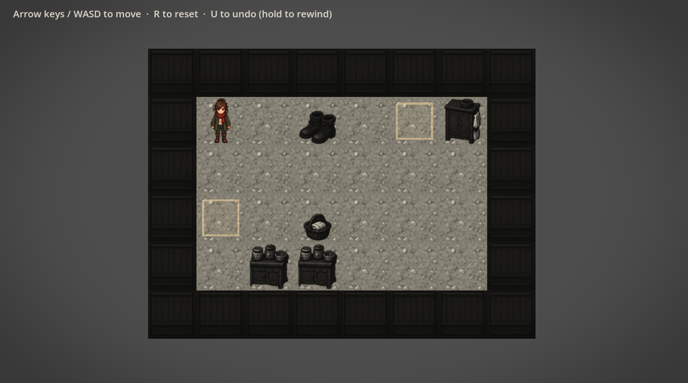
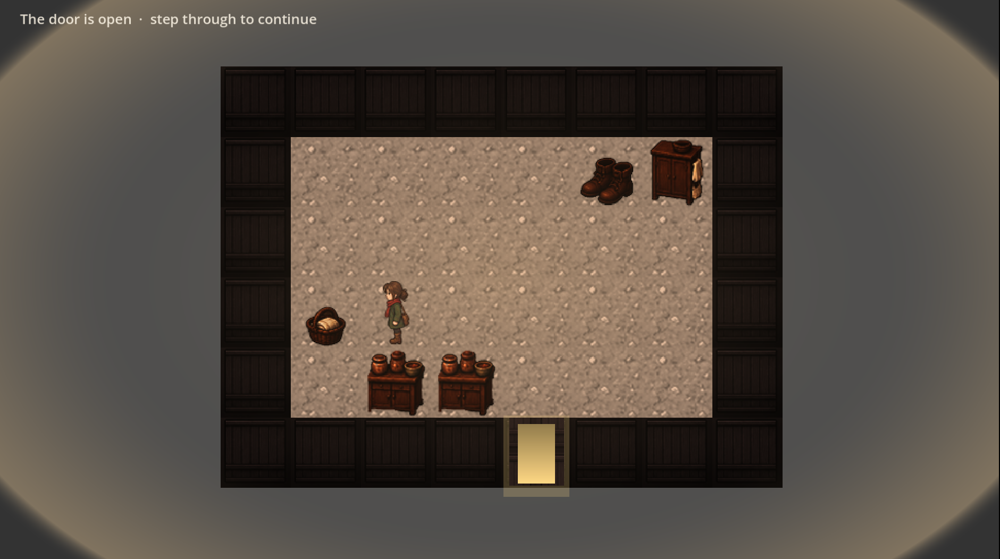

ModlyAI
Embeddable widget that puts a piece of furniture in a shopper's own room photo, at the correct scale, plus a merchant dashboard. Sold to independent furniture retailers.
Next.jsInstantDBPaddle
Four shipped projects below: an AI furniture widget for furniture retailers, a voice-note memory bot, a GitHub hygiene tool, and a puzzle game that proves its own rooms solvable before you ever press play. No team, no reviewers, so the interesting part of each one is usually the bug I found after I thought it was done.
I write TypeScript and Next.js for a living, and GDScript when I'm making a game instead. On everything below, I was the only engineer, the only designer, and the only QA, which means the usual safety net (a reviewer who catches the thing you missed) doesn't exist. So a lot of what I've actually gotten better at isn't a framework or a language, it's noticing when I'm wrong before someone else has to.
That shows up as a habit more than a skill: write down the traps that cost real time, measure instead of assume, and say what I checked and how, rather than what I believe should be true. The case studies below are mostly about the times that habit was missing and what it cost, and the one time it caught something before it shipped.
Thirteen projects. Four have a full write-up below, the rest are here because they're finished and real, not because every one needs a story.
Embeddable widget that puts a piece of furniture in a shopper's own room photo, at the correct scale, plus a merchant dashboard. Sold to independent furniture retailers.
Send a twenty-second voice note about someone you saw, get reminded of the one thing worth following up on, on the day it matters. No app to open.
A Claude Code skill that audits every repo on a GitHub account for a missing description, topics, license, or a README that's still scaffold text, then fixes what you approve.
A cozy color-restoration Sokoban puzzle game. No fail state is possible, except the one the design quietly introduces on purpose.
Audits a site for performance, SEO, accessibility, UX, and broken links, and reports the findings.
Converts a job listing into a tailored proposal: relevant skills, suggested pricing, and red flags in the listing itself.
Upload a PDF, get the sections and tables out of it as structured data, tailored to what the document actually contains.
Self-hosted, multi-tenant analytics platform: a tracking script plus a dashboard of visitor statistics, no third party involved.
Upload a room photo and a style, get back a concept, a color palette, and furniture suggestions for that specific room.
Turns a filled-out client questionnaire into a structured project brief: goals, scope, and timeline, ready to send.
Generates specific, buildable project ideas from your skill level, stack, interests, and goals, not generic suggestions.
Upload a screenshot of a website, get back a responsive HTML and Tailwind reconstruction of it.
Turns anything into a Claude Skill: an interview-driven generator that drafts, validates, and packages it.
Sole engineer, designer, and founder · Jan–Aug 2026 · modlyai.tech
Furniture is one of the worst things to sell online. A shopper can't tell whether a sectional clears their living room, and the retailer eats the return. On made-to-order and custom-upholstery pieces it's worse than a return: there's no restock, and lead times of four to twelve weeks mean a wrong guess is months gone.
The qualifying signal came out of prospect research: retailers who'd already written a "how to measure your space" guide, or mailed out physical fabric swatch kits, or sold a paid virtual design consultation. Those retailers had already told the world this problem was costing them money, and were paying humans to solve it one shopper at a time.
ModlyAI is a widget a shopper uses on the product page: upload a photo of your own room, see the piece placed in it at the correct scale, change the fabric or finish, send a quote request, all without leaving the page. Sold to independent furniture retailers at $299 and $599 a month.
Every line, every design decision, every deploy. No teammates, no reviewers, no QA.
Next.js 14 App Router, TypeScript 5.5, React 18: Server Components keep merchant data server-side, one framework covers marketing site, dashboard, and API. InstantDB: chosen for iteration speed as a solo dev, the honest retrospective on that is below. NextAuth 4, JWT strategy: sessions readable in Edge middleware with no database round trip on every request. Paddle: merchant of record, handles VAT and sales tax across the US, UK, and EU, which a solo founder can't do alone. Tailwind 3: consistency without maintaining a design system by hand. Vercel: main auto-deploys, fast, and also why a bad merge is live in ninety seconds. Rollup for the widget: merchants get one script tag, the widget can't assume React exists on their storefront.
InstantDB was picked for iteration speed. In August 2026 the InstantDB team announced they were joining OpenAI: signups closed, cloud apps shut down 31 August 2027, backups retained to August 2028. Rather than panic-migrate, I measured the actual coupling: 52 files use the server-side admin SDK, 78 queries and 41 transactions; 2 files use the realtime React SDK, with exactly 2 live subscriptions (a notification badge and a trial banner); the embeddable widget has no direct dependency at all, it goes through the API.
So the product was using a realtime sync database as a plain server-side store. The expensive part of leaving a sync database, reimplementing optimistic updates and subscriptions on the client, didn't apply. What remained was a mechanical rewrite of server-side query call sites. Self-hosting also exists as a zero-code-change fallback, which caps the downside. Decision: don't migrate now, migrate at the third paying merchant or February 2027, whichever comes first, because the cost curve tracks number of live merchants, not the calendar.
Working alone, I had no mechanism for finding out I was wrong. No reviewer, no QA, no users yet. The only feedback available was the compiler, and the compiler was structurally incapable of catching anything that actually mattered.
A code review of the dashboard surfaced three things at once, all live in production for months:
/dashboard/settings had three save buttons with invisible scope. A merchant could edit their widget title, scroll up, click the button labeled "Save," and get back "Saved." The widget title was not saved. No error. The change was gone on next load. The product displayed a success message while throwing the user's work away./dashboard/* route returned 500 to anyone not logged in. Root cause: a Server Component redirect() thrown across a 'use client' boundary, with no error boundary anywhere in the tree. Every prospect who clicked a link in a cold email without an active session hit a crash page.complete: true as a literal. "Test your live widget" was complete: false. Neither checked anything. The first thing a new merchant saw was a lie about their own account.There were others: analytics computed every number over the store's entire event history while offering a filter that said "All time" versus "30 days," and silently showed 30 either way. The mobile navigation drawer was invisible because the <header> carried backdrop-blur, and a non-none backdrop-filter makes an element a containing block for position: fixed descendants, so the drawer sized itself to the header's 90px box instead of the viewport.
The line that's the whole point: every one of those bugs passed tsc --noEmit. Every one shipped through a green build. Type safety proved the code compiled. It could not prove a drawer opened, a save persisted, or a checklist told the truth. Seven months of "the build is green" had been measuring the wrong thing, and I'd been cold-emailing furniture retailers the entire time, driving them to a dashboard that crashed if they weren't logged in.
The smaller story that proves the fix, and it's the whole lesson in miniature: doing an accessibility pass, I computed WCAG contrast ratios with hex math against an assumed white background and prescribed six fixes. Re-measured by sampling actually rendered pixels, three of the six still failed. The app's surfaces are a warm cream and a blue-tinted white, not #FFFFFF. The math had been correct and the answer had been wrong, because the input was an assumption rather than a measurement.
What actually changed wasn't "I fixed the bugs," the bugs were symptoms. It was the verification practice: CLAUDE.md, working notes that open with a Traps section, every trap that cost real debugging time written down with its mechanism. DASHBOARD-CHANGELOG.md, a record of what changed and a Still open list that names unsolved problems instead of hiding them, including a revoked-session crash still not fully diagnosed. A standing convention: "Verify by using it, not by building it. Type-checking proves it compiles, not that a drawer opens or a save persists." "Say what you checked and how," claims about behavior cite the line that was read, anything unverified gets named as unverified. And destructive verification gets confirmed first, or runs against records it created itself, because bulk-delete testing once permanently removed five real products.
Shipped and live. modlyai.tech is in production on Vercel. The widget installs as a single script tag on Shopify, WooCommerce, or a CSV catalog.
Engineering outcomes, all verifiable: settings split into four tabs with one save scope each, deep-linkable via ?tab=, per-tab dirty tracking, beforeunload guards, the silent data loss path no longer exists. Six per-page auth guards replaced with a single src/middleware.ts using withAuth at the edge, the 500 on logged-out routes is gone. Onboarding checklist derives from real widget_opened events. Analytics scoped to a real date range. A full accessibility pass: skip link, focus traps, aria-current, dialog semantics, 44px touch targets, contrast measured from rendered pixels. Every overlay portals to document.body with an SSR-safe mount guard.
Commercially, honestly: zero customers. Around 35 furniture retailers contacted by cold email, each on a three-touch sequence, plus a live demo running on a public URL. One inbound conversation from a manufacturer in Nagpur. No signed pilot yet. That gap is the real state of it, and pretending otherwise would undercut everything above.
The compiler was the only reviewer I had, and it couldn't see any of the things that were actually wrong. What I built in the second half of this project wasn't features, it was a way to find out I was wrong before a merchant did.
Solo, product / build / deploy · 2026 · Status: live, pre-launch, one user · useholdfast.co
Talk for twenty seconds after you see someone, get reminded of the one thing worth saying, on the day it matters.
There's no fight and no last conversation. There's a gap that quietly gets too wide to text across, and by the time you notice it, reaching out feels like an event rather than a message. The failure isn't that people stop caring, it's that the details fall out of your head between one meeting and the next.
Every product built at this problem so far has been a contact manager with softer language. They fail for the same reason: keeping a list of your friends up to date is work, and nobody does unpaid data entry about the people they love. So the design constraint came first: there must be nothing to maintain, and nothing to open.
No app. Capture is a voice note to a Telegram bot, roughly twenty seconds, said the way you'd tell a friend what happened. Transcribe, then delete the audio, text is stored, voice never is. Extract who you saw, what's happening in their life, and what you said you'd do (that last distinction is the product). Dates are resolved by a pure function, not the model. Commitments must quote the transcript verbatim or they're dropped. Persist person, facts, and commitments as linked records in one atomic transaction.
Rank once a day: overdue commitments first, then facts dated yesterday, then people drifting past their usual cadence. Send at most one, hard cap of three messages per person per rolling seven days, over-nudging is the failure mode that kills this category. Listen for the answer: "done" closes it, "not yet" brings it back in three days, "no" drops it without guilt.
A real record from the production database.
"Coffee with Marco this afternoon. His mom's out of the hospital and doing okay. He's got a final interview on the 28th and he's nervous about it. I told him I'd send him the recruiter's number this week."
Person: Marco · fact: mom out of hospital, recovering (no date) · fact: final interview, nervous, 2026-08-28 · commitment: send over the recruiter's number, due 2026-08-24 · evidence: "I told him I'd send him the recruiter's number."
"Marco: you said you'd send over the recruiter's number. Still worth doing?"
Note what's not in the record: Marco said nothing about what he'd do, so nothing was stored as a commitment for him. The interview date resolved without the model doing arithmetic. The reminder names Marco because the message template knows the person even though the stored text doesn't.
A wrong reminder is worse than no reminder. The extraction prompt was the highest-stakes string in the codebase, so the fix started with measurement: twelve real transcripts with exact expected output, run three times each against every prompt version, fixed reference date so results were comparable. Three failures survived every rewrite, each one the model being asked to do something it's bad at.
| Failure | Tried | Actually fixed by |
|---|---|---|
| "Thursday" resolved to a Monday | Stating today's date + a lookup table in the prompt | A pure date resolver in TypeScript |
| Commitments nobody made | An explicit rule, then a stronger rule with examples | Checking a verbatim quote against the transcript |
| Person's name dropped from the reminder | A rule requiring substitution | The message template, which already knew it |
The date lookup table is worth dwelling on: giving the model a table of all seven weekdays worked because seven is a closed set, every possible answer was there to copy. Extending the same idea to ordinals failed badly. With two worked examples and no entry for "the 14th," the model copied the nearest example date wholesale and returned the 28th. Demonstration is not lookup. Moving the arithmetic into code fixed it permanently and had a second effect: date behavior became testable in milliseconds with no API call, freeing the twelve slow, non-deterministic cases to test only what the model is genuinely good at, reading what a person said.
The database showed eleven captures. One had a linked person and facts, the other ten had stored nothing, commitments table completely empty. The bot had replied convincingly to every one. One line was the cause: profile creation was gated on whether the person was new.
if (existingPersonId === null) {
chunks.push(
db.tx.profiles[profileId].create({ ... }), // already exists
db.tx.people[personId].create({ ... }),
);
}
The first time a returning user mentioned a new person, that re-created a profile that already existed. The chat id column is unique, the database rejected the step, and because it was one atomic transaction, the person, facts, and commitments went down with it. Two changes came out of it: the reply now reports what was saved rather than what was extracted, and a rule went into the project notes, a function named findOrCreate must actually create, this one only found.
That last row is the finding, worth more than the passing tests. Working alone, in a normal week there are perhaps two moments seeing someone worth recording, Holdfast needs someone who has five or six. I built a product I'm not the user of, and then used myself to test it. The reminders that did arrive felt hollow, several were about example transcripts written during development rather than real promises to real people. Neither of those is a reason to stop, both are reasons to stop testing it on myself.
What happens next: five testers chosen for one property only, they see a lot of people, two weeks. The measure is their capture counts in the database, not their opinions in a chat. Nothing new gets built until those numbers exist.
I built a product I am not the user of, and then used myself to test it.
Solo · Ships as a Claude Code skill · github.com/marcosmodly/github-repo-hygiene-skill
A repo with no description, no topics, no license, and a README that still says "This project was bootstrapped with create-next-app" reads as abandoned, even when the code behind it is solid. Nobody does this on purpose, it's just the stuff that's easy to forget once the thing works. Anyone vetting a developer, a recruiter, a client, another dev checking your work, starts on GitHub, and a sparse profile costs you before they've read a line of code.
It checks every repo (or a specific one) for five things: missing description, missing topics, no license, no README, and a README that's still unedited scaffold text (create-next-app, create-react-app, and similar). The audit is read-only and reports findings before touching anything, grouped as clean repos, small gaps, and real problems. Nothing gets written without you seeing it and approving it first, a wrong or invented project description is worse than no description at all since it's your public profile. For anything it does fix, it reads the actual code first (package.json, existing docs, source files) rather than guessing, then writes descriptions and topics with gh repo edit, and rewrites thin READMEs through a real clone, commit, and push.
It's not a one-off script, it's a Claude Code skill: a SKILL.md with the audit/report/fix workflow plus a bash script (audit_repos.sh) that does the actual read-only scan against the GitHub API. Drop it into a Claude Code skills directory and it activates on its own whenever someone asks to clean up their GitHub, audit a repo, or mentions their profile looking sparse or unfinished, no need to name it directly.
github-repo-hygiene-skill, MIT licensed, real README, topics set, the works, which is a little bit the joke: the tool that fixes exactly this problem doesn't have this problem itself.
Solo, design, code, integration, release · Godot 4.3, GDScript · Shipped, playable in browser + Windows · modsy.itch.io/grandmas-lighthouse
The design has one hard constraint: no fail state. Nothing chases you, nothing is timed, you cannot lose. A second mechanic contradicts it: when an object reaches its home tile it's committed, it blocks like a wall and undo will not take it back. Rewind past the move that placed it and the player and all unplaced objects roll back while that one stays home. You can take back your steps, you cannot take back the warmth.
Making one class of move permanent introduces the possibility of a stranded room, an arrangement from which no sequence of moves and no amount of undo can reach a solution, a fail state wearing a disguise. It would be silent: no message, no death, just a dead room.
The rooms aren't playtested for solvability, they're proved, in a headless test that runs on every change (tests/puzzle_model.gd). It reimplements the room rules on plain data: border walls, fixed furniture, one-tile pushes with no pulling, gates that latch open when the right object rests on the right cell. Each arrangement packs into a single integer (coordinates are 0-7, three bits each, player in bits 0-5, each pushable in the next six, each gate one bit above), so a state becomes a dictionary key with no allocation, which is what makes a millions-of-nodes search fast enough to run constantly. Breadth-first search, solved states absorbing, the first solved state found is also the shortest solution, which doubles as the room's difficulty measure.
It asserts two things and deliberately not a third: a solution exists from the start; undo and reset always land somewhere solvable (the hard one, every set of committed objects the player can reach must itself leave the room solvable from the start layout with those pre-placed, the analyzer enumerates those placements and checks each); not dead ends, wedging an object that isn't yet home is fair, undo takes it back, the player loses time, not the room. They're counted and reported, never failed on. The raw dead-end count is useless as a design signal because it explodes combinatorially the moment one crate is wedged, so first_dead_end, moves from the start to the shallowest dead end, is a fairness reading instead: how far a player explores before a wrong move costs them a rewind.
The search caps at 2,000,000 distinct arrangements. Later rooms carry 5-6 objects with 50-80 move solutions and run past it. Solved states sit shallow so solvability, the shortest solution, and per-object metrics stay exact; max_depth and dead-end counts degrade to lower bounds, and the report says so and downgrades the undo-buffer check to a warning rather than printing a number it can't stand behind. The undo history holds 256 moves, set above the deepest arrangement measured.
Grey means unfinished, color means done, so if an object can't be told from its floor the puzzle is unreadable, a palette authority file (palette.gd) enforces minimum luma gaps using Rec. 601 weighting. Two findings came from measuring rather than looking: Godot's modulate multiplies, so it can only ever darken, a grayscale floor at 0.515 tinted with a 0.773-luma warm lands at 0.398, below both inputs, and all 14 objects were failing the legibility gate on all six floors, fixed by lifting the grayscale plates so the product landed where the ladder expected. And objects looked wrong when floors were tiled, measuring found the tile border pixels reading 103 against an interior of 144, each tile shipped with its own drop shadow, printing a grid of dark seams the palette system couldn't see, the tiles had to be de-framed before the value ladder meant anything.
Five rooms chaining door to door (Entryway, Half-Landing, Kitchen, Her Study, Lamp Room), a closing cinematic, a title screen that reflects a finished save, a pause menu, sound synthesized in code with no audio files. 26 headless verification suites. Web build (threaded, for browser audio) and a Windows build.


The character and object sprites are mine. The illustrated lighthouse exterior, used on the title screen and in the closing cinematic, is AI generated, and the itch.io page is tagged accordingly, I'm not claiming otherwise, the store page carries the disclosure and anyone can check. What I did do to all of it: every sprite gets alpha-weighted mean luma measured against the palette thresholds before it ships, the same gate the placeholder polygons had to pass, textures get no exemption.
A bug once survived a test written specifically to catch it: the test reached the state it wanted to inspect by calling a seek function, and that function re-ran the layout pass on every call, so the test path repaired the exact bug it was checking for and reported green while the real thing was broken on screen. A test that reaches the state by a different path than production is testing a different program. The same week, twenty minutes of actually playing surfaced a dead end that 24 passing suites walked straight past.
If you're hiring, evaluating one of these for a pilot, or just want to poke at something above, email is the fastest way to reach me.